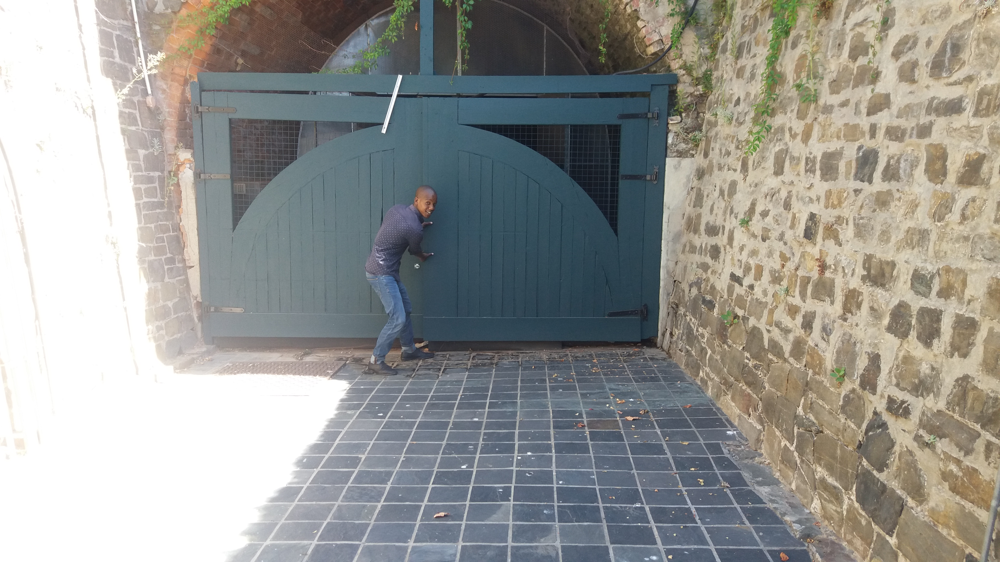
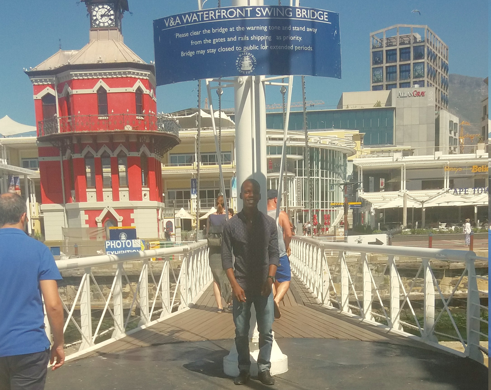
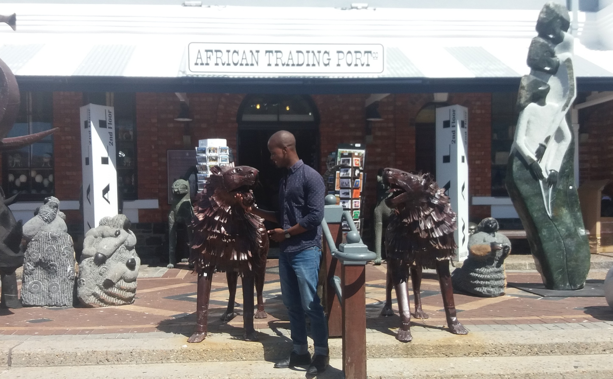

Dubai is a city and emirate in the United Arab Emirates known for luxury shopping, ultramodern architecture and a lively nightlife scene. Burj Khalifa, an 830m-tall tower, dominates the skyscraper-filled skyline. At its foot lies Dubai Fountain, with jets and lights choreographed to music. On artificial islands just offshore is Atlantis, The Palm, a resort with water and marine-animal parks.
| English Phrase | In Chinese |
|---|---|
| Hello, my name is Siyasanga. | 你好我的名字是 Siyasanga |
| I love speaking Chinese. | 我愛說中國 |
| I hope to visit china soon, thank you | 我希望很快訪問中國，謝謝 |
The Historic TunnelRight next to the Ulundi parking Garage is the Historic Tunnel.The old builders of 1860 had a great problem - they had to get stone quarried from what is now the V&A Waterfront Marina to the other side cutting, through which gangs of sweating convicts pushed cocopans full of stone to where Quay 5, past where Ferrymans, Mitchell's Brewery the Amphitheatre are today. Much later the cutting was roofed over and built on, and during World War II was actually converted - fortunately without ever being needed - for use as an air-raid shelter. |
 |
|  | V&A Waterfront Swing BridgeThe bridge swings over the link between the Alfred Basin and the Victoria Basin in the Victoria & Alfred Waterfront. It was designed and constructed in 1997. |
The African Trading PortAfrican Trading Port (ATP) has attempted to bring Africa under one roof. Artwork from practically each and every African country and culture is available. ATP’s roots started with the establishment of an art workshop in Zimbabwe in 1978. ATP's current location is the Old Port Captain’s Building at Cape Town’s Waterfront since 2001. |
 |